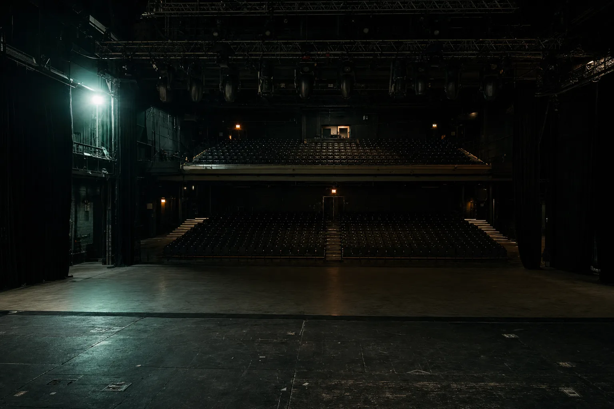
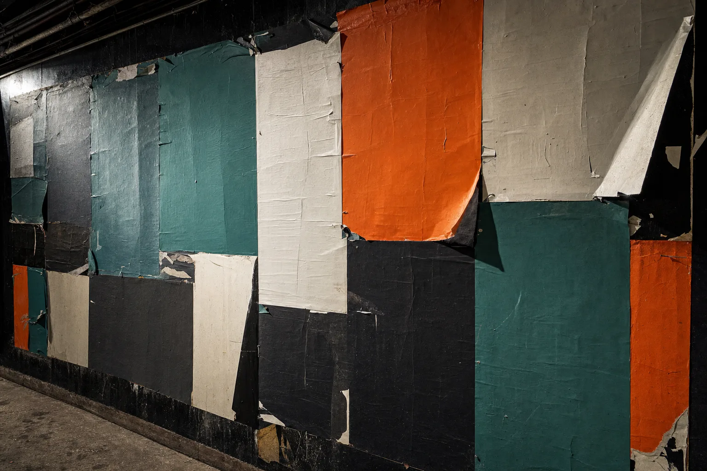
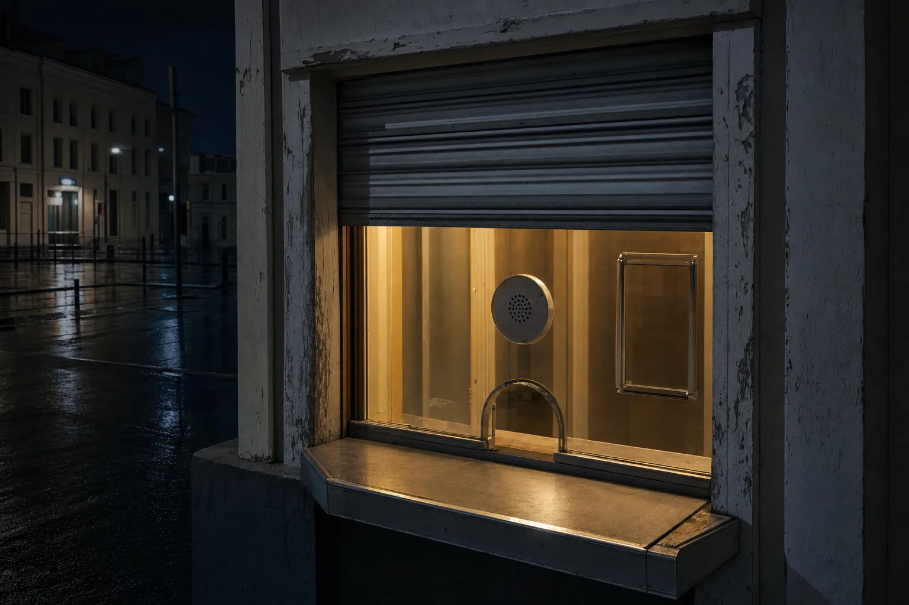
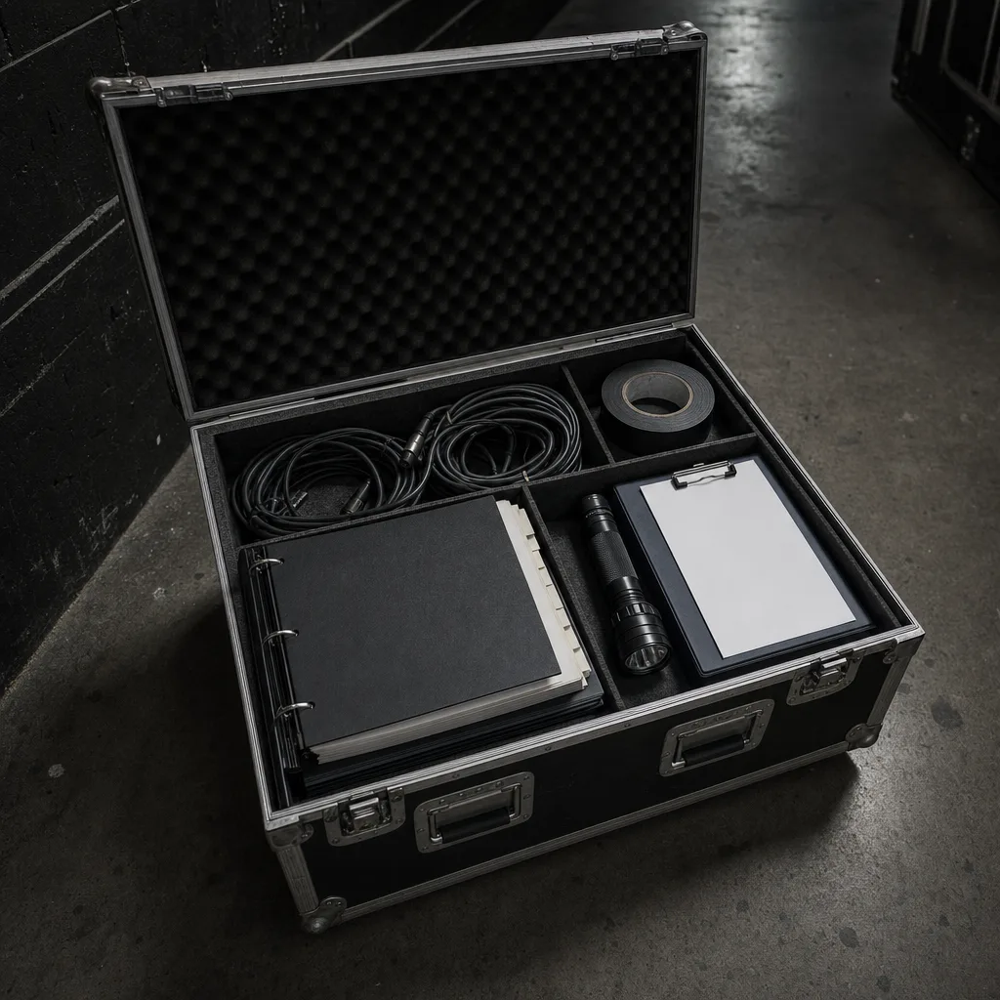
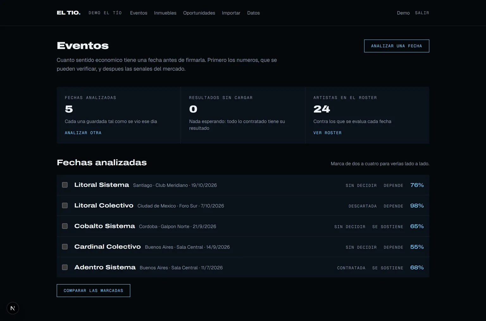
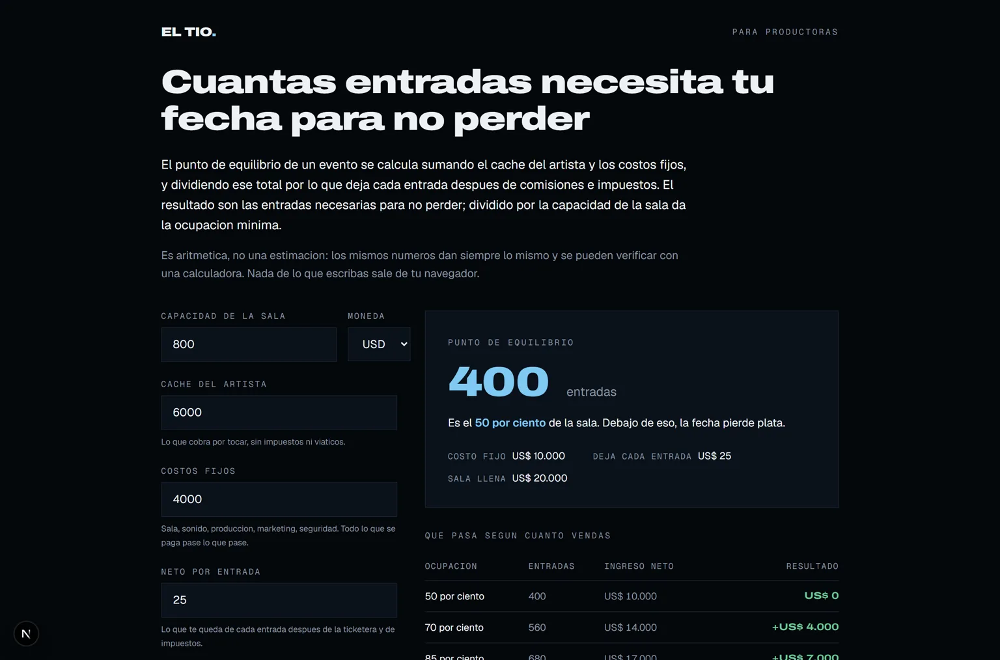
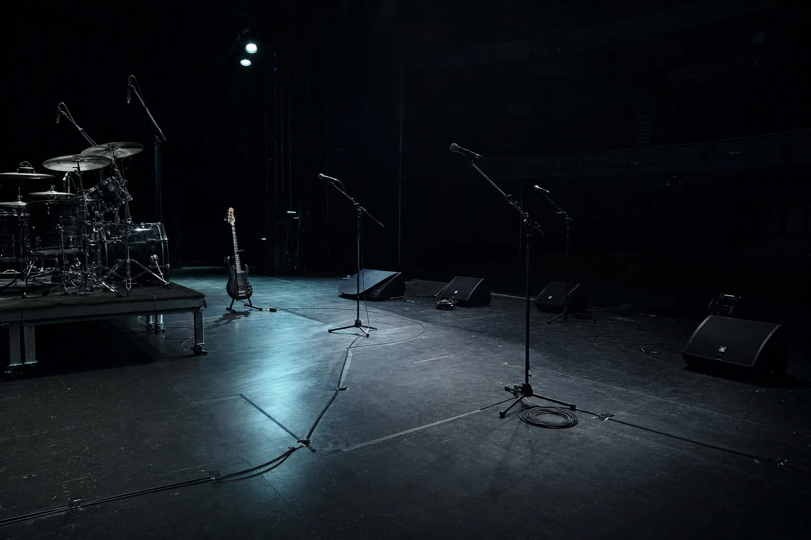

EL TÍO EVENTOS
Lo que decide la fecha
ya está decidido
cuando se firma.
Después de firmar todo es ejecución. El artista, el día, la sala, el cachet y el precio de la entrada deciden si la fecha gana o pierde, y esa cuenta casi siempre se hace en el settlement, cuando ya no cambia nada.
USD 99, pago único.
AFORO
0/ 800
Sala vacía
PUNTO DE EQUILIBRIO
620 entradas, el 78 por ciento de la sala
LA DECISIÓN
Cuatro decisiones, tomadas casi siempre de memoria.
Alguien conoce al artista. Alguien vio que llenó en otra ciudad. Nadie hace la cuenta de cuántas entradas hacen falta para no perder, y cuando se hace, ya se firmó.
El cachet
Se cierra por teléfono y queda fijo. Es el número más grande de la fecha y el único que no se puede bajar después.
El día
Un jueves de mes cargado no es el mismo jueves que uno vacío. La competencia de esa semana ya está publicada y nadie la mira.
La sala
El aforo decide el techo. Una sala grande a medio llenar cuesta más que una chica llena.
El precio
Se define mirando lo que cobró el vecino, no lo que necesita esta fecha para cerrar.

LA BASE
Esto va siempre, encuentre lo que encuentre el Audit.
Es lo que sostiene todo lo demás. Sin esto, cualquier automatización se monta sobre una fecha que nadie sabe cómo se vendió.
CRM
sobre el que ya tengasSi ya tienes uno, trabajamos sobre ese. Si no, lo montamos con el circuito real: artista, hold, contrato, advancing.
Tu base de datos, ordenada
una fila por personaCompradores de entradas de fechas anteriores, unificados por persona y no por transacción, que es como suelen estar.
Newsletter propio
tu lista, no la de la ticketeraTu lista para anunciar una fecha antes que la ticketera, y sin pagarle a nadie por llegar a tu propia gente.
Web propia y editable
una página por fechaEl sitio de la productora y una página por evento, con el camino completo hasta el pago.
Chatbot que atiende y califica
a cualquier horaContesta lo de siempre: horarios, edad mínima, mesas, accesos y cómo llegar.
Nada de esto es una plataforma nuestra. Se monta sobre herramientas que ya existen, queda a tu nombre y con tus accesos, y el equipo aprende a operarlo. Si ya tienes algo funcionando, se trabaja sobre eso.
LA CUENTA
Cuántas entradas necesita esta fecha para no perder.
Es aritmética, no una estimación: el cachet más los costos fijos, dividido por lo que deja cada entrada. Muévelo y mira cómo se corre el umbral sobre el aforo.
Lo que cobra por tocar.
Sala, sonido, producción, publicidad y seguridad.
Lo que queda de cada entrada después de la ticketera y de impuestos.
Cuánta gente entra.
PUNTO DE EQUILIBRIO
400entradas
Es el 50 por ciento de la sala. Debajo de eso, la fecha pierde plata.
- Ocupación mínima
- 50 por ciento
- Margen si se llena la sala
- 400 entradas
- Vendiendo siete de cada diez
- 560 entradas, 160 por encima
Nadie puede decirte cuántas entradas vas a vender, y conviene desconfiar de quien lo prometa. Esto te dice cuántas necesitas vender para no perder, que es la única de las dos preguntas que tiene respuesta exacta.
La misma cuenta, con moneda y tabla de escenarios, está publicada y es gratis: la calculadora de punto de equilibrio.
LAS HERRAMIENTAS
Seis herramientas, y las opera tu equipo.
No entregamos un servicio que hay que volver a comprar en cada fecha. Entregamos la herramienta y la capacitación para usarla, que es lo que queda cuando termina el trabajo.
Analizar una fecha antes de firmarla
Artista, plaza, sala y economía en una sola lectura.
Qué audiencia observable hay en esa ciudad, qué compite esa semana, qué tan cargado está el mes y cuál es el número que decide. Cada fecha queda guardada tal como se vio ese día, para poder comparar después contra lo que pasó.

Comparar fechas lado a lado
Tres o cuatro opciones, con los mismos criterios.
Cuando hay que elegir entre un artista y otro, o entre dos salas, o entre dos fines de semana, la comparación se hace con las mismas variables y no de memoria.

La página del evento
El camino completo hasta el pago.
Entrada general, mesas, VIP, preguntas frecuentes, WhatsApp y seguimiento. Se arma sobre la ticketera que ya usas, no la reemplaza.

El advancing, preparado
El mismo ida y vuelta de cada fecha, listo de antemano.
Del contrato y del rider salen los pagos, el hotel, los vuelos, los transfers, la hospitality, lo técnico y los deadlines. Una persona aprueba antes de que salga algo.
Tu base de compradores
Unificada por persona, no por transacción.
Los que compraron entradas de fechas anteriores, deduplicados y con lo que fueron a ver. Es lo que permite anunciar una fecha a tu propia gente antes que la ticketera.
Chatbot que atiende y califica
Lo de siempre, contestado a cualquier hora.
Horarios, edad mínima, mesas, accesos y cómo llegar. Y lo que no sabe, lo deriva con la conversación entera adelante.
EL PRODUCTO
Software inteligente para productoras y promotores.
De los siete rubros, éste es uno de los dos donde el software ya está construido y desplegado. Las dos capturas son de ese producto, con datos de demostración.


No predecimos venta de entradas, y conviene desconfiar de quien lo prometa. Otras herramientas del rubro lo hacen con datos de ticketing verificados que nosotros no tenemos. Nuestro terreno es la economía de la fecha.
UN CASO
Una productora con 2 a 4 fechas por mes en una sala de 800 personas
- QUÉ ENTRA
- El cachet, el costo de sala, producción y publicidad, el precio de entrada y la comisión de la ticketera. Del lado del artista, qué audiencia observable hay en esa ciudad y qué otra cosa hay esa semana.
- QUÉ SALE
- Cuántas entradas hacen falta para no perder y qué porcentaje del aforo representa. Si son 620 de 800, es un riesgo alto.
- QUÉ CAMBIA
- Se firma, se renegocia el cachet o se pasa. Con el número sobre la mesa, no después.
Lo que mediríamos: fecha por fecha, lo estimado contra lo que pasó. Es la única forma honesta de ganar precisión.
LA HOJA DE RUTA
Noventa días, y el único momento que no se mueve.
- D-90Se decideArtista, día, sala, cachet y precio. Acá se gana o se pierde la fecha.
- D-75Se monta la baseCRM, base de compradores, newsletter, página propia.
- D-60Se hace la cuentaCuántas entradas para no perder y qué parte del aforo es.
- D-45Se firma o noCon el número sobre la mesa: se firma, se renegocia o se pasa.
- D-30Se publicaLa página de la fecha, el anuncio a tu propia gente, la pauta.
- D-14Se prepara la fechaAdvancing: pagos, hotel, vuelos, transfers, técnico.
- D-3Se cierra la operaciónListas, acreditaciones, puerta, horarios.
- D-0PuertasA partir de acá solo se ejecuta.
- D+1SettlementLo estimado contra lo que pasó, guardado para la próxima.
LA AUDITORÍA
Siete áreas, y el rubro encima.
El Audit no mira la fecha: mira la productora. Un cuestionario guiado de 15 a 25 minutos, media hora de llamada mano a mano, y de ahí sale la hoja de ruta.
- VENTAS
Cómo se decide una fecha, y qué pasa con quien ya compró entradas antes.
- OPERACIONES
Advancing, riders, hoteles, vuelos y todo lo que se repite en cada fecha.
- DATOS
Punto de equilibrio, cierres de fecha y qué queda registrado de cada show.
- MARKETING
La página del evento, la pauta y de dónde viene cada venta.
- ATENCIÓN
Las mismas preguntas de siempre: horarios, edad, mesas, accesos.
- EQUIPO
Qué parte de la producción podría resolverse sin contratar a nadie más.
- SOFTWARE
Ticketera, planillas, CRM y qué está desconectado de qué.
EL MÉTODO
Cuatro tiempos, siempre en este orden.
Cada uno se apoya en el anterior.
- 01
Auditamos
Se mira la operación área por área. Sin esto, lo que sigue es adivinar.
- 02
Optimizamos
Se ordena el proceso antes de automatizarlo. Automatizar algo malo lo hace más rápido, no mejor.
- 03
Automatizamos
Solo lo que tiene sentido en esta productora, en el orden que conviene.
- 04
Capacitamos
El equipo queda sabiendo operarlo. Si depende de nosotros, no sirve.

D-0
PUERTAS
A partir de acá no se decide nada. Se ejecuta lo que se decidió noventa días antes.

EL SETTLEMENT
Primero se mide. Después se decide.
- Cuestionario guiado15 a 25 min
- Áreas medidas7 más el rubro
- Hoja de ruta priorizadaahora y después
- Revisión humanaantes de entregar
- Llamada mano a mano30 min
- Conclusión con los cambiospara aplicar
TOTAL
USD 99
Pago único, el mismo para los siete rubros. Se descuenta de cualquier desarrollo que contrates después.
Auditar mi productoraSe entrega en 24 a 48 horas hábiles.
LO QUE PREGUNTAN
Lo que suelen preguntar.
Yo conozco mi mercado mejor que ustedes.
Seguro. Esto no reemplaza tu criterio: le pone el número al lado antes de firmar.
¿Me van a decir si voy a vender?
No, y desconfía de quien te lo prometa. Te decimos cuánto necesitas vender para no perder.
Los datos de streaming no dicen nada.
Solos, no. Por eso el análisis los cruza con la economía de tu sala, que es lo que decide.
Ya uso una ticketera con reportes.
Los reportes son después del show. Esto es antes de firmar.